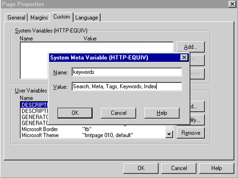

|
| ||
|
| ||
Larry Swanson, Senior Editor,
The WebWorkz 
In a perfect cyber-world, each time a potential customer asks a search engine about your product, company, or industry, your site appears at the top of the results list. Alas, the unpredictable nature of search engine algorithms means that you are unlikely to achieve this perfection anytime soon. But you can increase your site's visibility with well-chosen keywords.
Search engines send "spiders" or "robots" to evaluate your pages for their relevance to various search terms. One of the most important things these agents look at is the "keywords" META tag. This tag lets you tell search engines what your site is about. So, if you have included the keyword phrase "salmon wrestling" in your META tag and someone goes to HotBot and searches for "salmon wrestling," then your page is likely to appear high in the search results.
Obviously, selecting the right keywords is important. Begin by brainstorming all of the words that can be used to describe your products, your business, and your industry. More to the point, try to figure out all of the words that prospective customers might use when they come looking for you. You will probably end up with a long list, consisting of both very specific words that name your products as well as more generic words that describe your type of products and your industry. Since some search engines limit the number of keywords they will look at, edit your list down to no more than 20 words and multiple-word phrases.
Now that you have a list of keywords that describe your site, Microsoft FrontPage® can help you display them so that you get a high placement in the search engines.
Here's how to use FrontPage to add your META keywords to your home page:

Figure 1. Screen shot of the Page Properties dialog box
If you want to see how your keywords look to the search engines, click on the "HTML" tab at the bottom of a page in the FrontPage Editor. Your META tag, which will be located at the top of the page, will look something like this:
<meta name="keywords" content="widgets, thingamajigs, red, green, blue">
For more on using keywords to improve
your search engine position, see the article Use Keywords to Improve
Your Search Engine Placement  at The WebWorkz
at The WebWorkz  .
.
Did you find this material useful? Gripes? Compliments? Suggestions for other articles? Write us!
© 1999 Microsoft Corporation. All rights reserved. Terms of use.